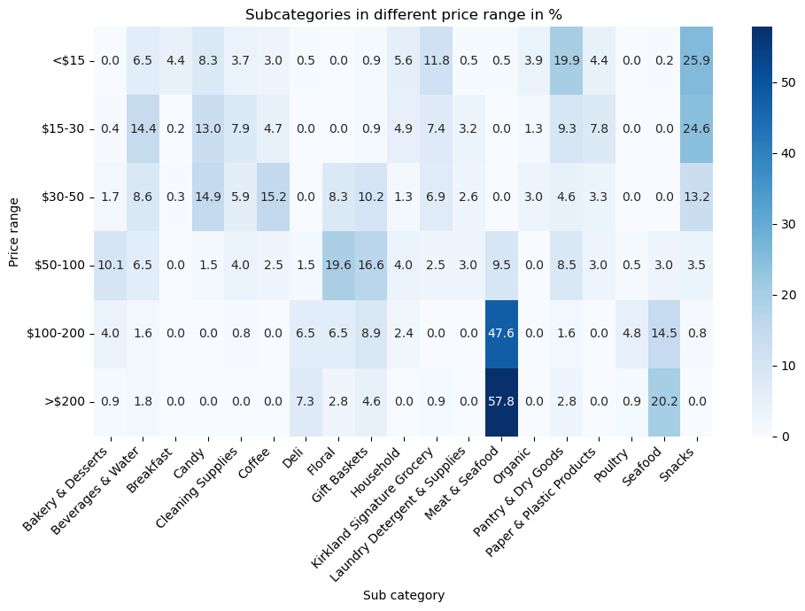
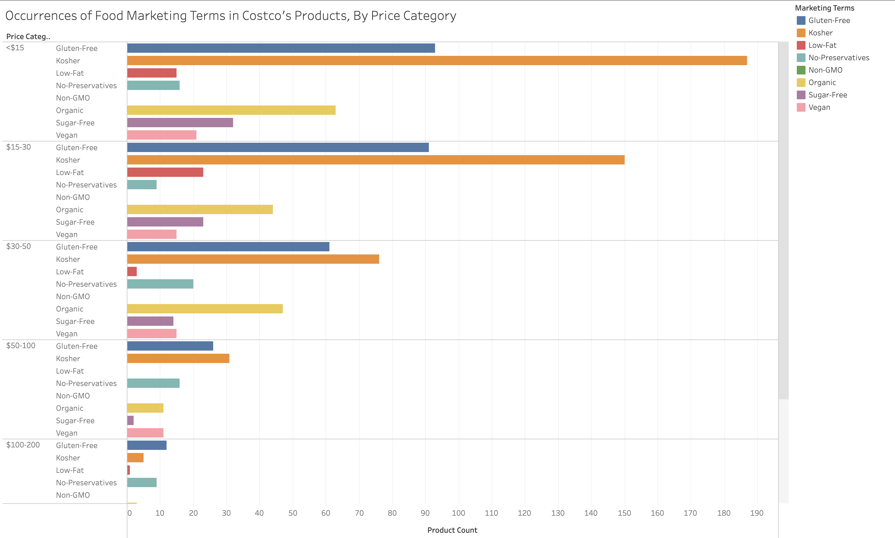

1. Product Count, by Category
This bar chart shows the distribution of product subcategories (e.g. Snacks) on Costco’s online marketplace, by category (e.g. Food). You can hover over each bar to view the specific category name and product count.
11 of the 19 subcategories are under the Food category, 4 subcategories are under household, 2 subcategories are under Beverages, and 2 subcategories are under Other. The Snacks subcategory leads with the highest number of products, at 290 items. This is followed by Pantry & Dry Goods, Candy, and Beverages & Water, each containing 171, 153, and 147 products respectively. On the other hand, subcategories involving perishable goods, such as Poultry and Deli, have the fewest available products, at 21 and 8 respectively. This is likely due to the logistical challenges associated with refrigeration and transporting perishables through Costco’s delivery services.
Overall, this suggests that Costco’s online grocery strategy prioritizes durable goods with long shelf lives and lower logistical costs, while still offering select perishables based on customer demand.
2. Subcategories in different price ranges in %
This heatmap shows the Subcategories in different price ranges in percentages with price ranges from ($<15, 15-30, 30-50, 50-100, 100-200, and >200) and subcategories. It shows that Meat & Seafood dominates the highest price ranges at Costco. This subcategory accounts for 57.8% of all products priced over $200 and 47.6% of those in the $100-200 range. This suggests that premium cuts of meat, seafood bundles, and specialty proteins often sold in bulk or as high-quality offerings are the key drivers of higher prices for premium products. Costco’s bulk strategy are tailored for shoppers looking for larger quantities of luxury meats. This skew also tells that Meat & Seafood is a major revenue contributor in the upper price tiers.
The distribution varies significantly by price group. Snacks are most concentrated in lower prices, making up 25.9% of products under $15 which are more affordable. Pantry & Dry Goods are across most price ranges and are most dominant in the mid tier range ($30-50 and $50-100) and they’re commonly sold in value-sized packs. Subcategories like Snacks, Pantry & Dry Goods, and Kirkland Grocery, remain more evenly distributed in lower to mid-range pricing. Floral (19.6%) and Gift Baskets ($16.6%) fit in the $50-100 price range. This overall pattern reflects Costco balancing essential everyday items at accessible prices, but also higher value purchases in premium categories like meat and seafood.
For consumers, for the best value on everyday items like snacks and breakfast foods, shop in the under $30 range. If you’re buying Meat & Seafood expect higher prices often around $100+ due to bulk sizing or premium cuts. Consider splitting large purchases with others to save while still benefiting from Costco’s bulk pricing.
3. Product Rating by price range/product list
This boxplot shows the product rating distribution by price range with a product list. Users can see the number of products, Q1, median, and Q3 when they hover over each price range. There’s a dropdown for the main categories of Food, Beverages, Household, and Other. Also, a more detailed dropdown will be made by subcategories under the main category.
In the Beverages category, Beverages & Water includes 147 products with an average price of $36.55 and a moderate discount rate of 6.1%. These items offer good value for bulk shoppers looking for hydration items. Coffee stands out as a top subcategory with 89 products with an average price of $33.30, and the highest discount rate among all subcategories. This makes coffee a top pick for value essentials.
In Food category, Bakery & Desserts includes 33 products with a relatively high average price of $83.41 and no discounts. Customers are willing to pay more for specialty baked goods, and Breakfast products are priced much lower with an average of $13.30, and a 19% discount rate (highest in the Food category) making them a great option for customers on a budget. Candy offers 153 affordable items with a $25.11 average price and a discount rate of 8%, making it popular for families and parties. The Deli subcategory has a smaller selection of 21 higher priced products with an average of $208.90 but with a notable discount rate of 14.3%. This targets shoppers looking for premium convenience foods. Kirkland Signature Grocery includes 117 products with an average of $28.51 with moderate discounting with Costco’s brand as a dependable option for quality and affordability.
Meat & Seafood is one of the most premium food subcategories with 143 products averaging $221.89 and a 6.3% discount rate. These items appeal to shoppers wanting to buy quality proteins in bulk. Organic products average $22.42 with no discounts, reflecting a niche appeal to health-conscious shoppers. Pantry & Dry Goods offers 171 staples at an average price of $29.10 and a 7% discount rate, making it a go-to for everyday essentials. Poultry is limited to just 8 products, priced high at $159.99 with no discounts, which could be a seasonal offering. Seafood includes 47 items averaging $195.52 and a discount rate of 4.3% with minimal price cuts. Snacks dominate in volume with 290 products averaging $21.57 and a 7.2% discount rate, making them the most accessible and popular food subcategory.
In the Household category, Cleaning Supplies consist of 85 items with an average price of $31.46 and a discount rate of 17.6%, making it a practical choice for home maintenance. The general Household subcategory includes 65 items priced similarly at $31.21 but with no discounts, possibly covering other utility goods. Laundry Detergent & Supplies offers 33 products with an average price of $35.73 and the highest discount rate across all categories at 30.3%, making it a target for promotions and bulk purchasing. Paper & Plastic Products has 76 items averaging $25.35 and a discount rate of 13.2%, perfect for stocking up on household staples.
In the Other category, Floral includes 75 items with an average price of $71.98 and no discounts. These items are likely purchased for special occasions and are valued more for freshness and presentation rather than prices. Gift Baskets includes 89 products averaging $80.56 with a discount rate of 4.5%. This is targeted for seasonal events that prioritize variety and packaging over savings.
4. Customer Rating Distribution Discounted vs. Full price items
This density plot on Density plot on Customer Rating Distribution Discounted (red) vs. Full price (blue) items.
Both groups peak between 4.0-5.0 and have strong customer satisfaction across. However, the full-price items show a noticeably sharper and taller peak especially around the 4.5 to 4.8 range. These products consistently receive higher ratings and have less variability.
For discounted items, have a wider and flatter distribution with a density spread below 4.0. This shows a wider range in customer satisfaction potentially more mixed quality or that discounts may sometimes apply to less popular items. However, the discounted products still maintain a significant density in higher ratings suggesting that many discounted items remain well-reviewed by customers.
Overall, this visualization shows that while both product types have strong customer ratings full-price items tend to deliver more consistently high satisfaction vs. discounted products may involve more variation in quality. For budget-conscious shoppers, discounted products can still offer great value, but it’s important to check customer ratings carefully to ensure their quality.
5. Occurrences of Food Marketing Terms in Costco’s Products, by Price Category
This horizontal bar chart shows the occurrences of food marketing terms in all products, categorized by price range (<$15, $15-30, $30-50, $50-100, $100-200, and >$200). These price ranges match those used in Visualization 2. The marketing terms include “organic,” “gluten-free,” “kosher,” “non-GMO,” “sugar-free,” “low-fat,” “vegan,” and “no preservatives.” You might expect these terms to appear more frequently in higher-priced products, but this doesn’t actually seem to be the case.
For example, kosher products are by far the most common across all categories, with 187 in the <$15 range, 150 in $15-30, and 76 in $30-50. Similarly, gluten-free and organic labels are most prevalent in the lower price ranges. There are 93 gluten-free and 63 organic products under <$15, compared to only 5 gluten-free and 0 organic products above $200. Interestingly, low-fat and sugar-free claims are also more common in the lower tiers—low-fat peaks at $15-30 with 23 occurrences, and sugar-free is most common in <$15 products (32 occurrences).
Overall, most products with health-conscious or specialty labels appear in the lower price categories. This challenges the common assumption that health-conscious branding is primarily associated with premium-priced food products.
Summary of Findings
Our analysis of Costco’s online marketplace reveals key patterns in product availability, pricing, and customer satisfaction. Most products fall under the Food category, with durable goods like Snacks and Pantry items dominating. Perishable subcategories like Deli and Poultry are less represented, likely due to delivery constraints. Price ranges vary widely: Meat & Seafood leads in higher-priced items, while Snacks and Pantry goods are concentrated in lower to mid-price tiers. Product ratings remain high overall, though full-price items receive more consistently strong reviews. Discounted products show more variability but still offer solid value. Interestingly, marketing labels like “organic” and “gluten-free” appear more in lower price tiers, challenging the idea that health-conscious products are primarily premium.
It would be interesting to see how our findings compare to in-store purchases, where Costco’s bulk pricing and customer decision-making may influence purchases differently. In the future, we might go further and explore regional pricing differences and conduct sentiment analysis on customer reviews to gain deeper insights into Costco’s pricing and product strategies.